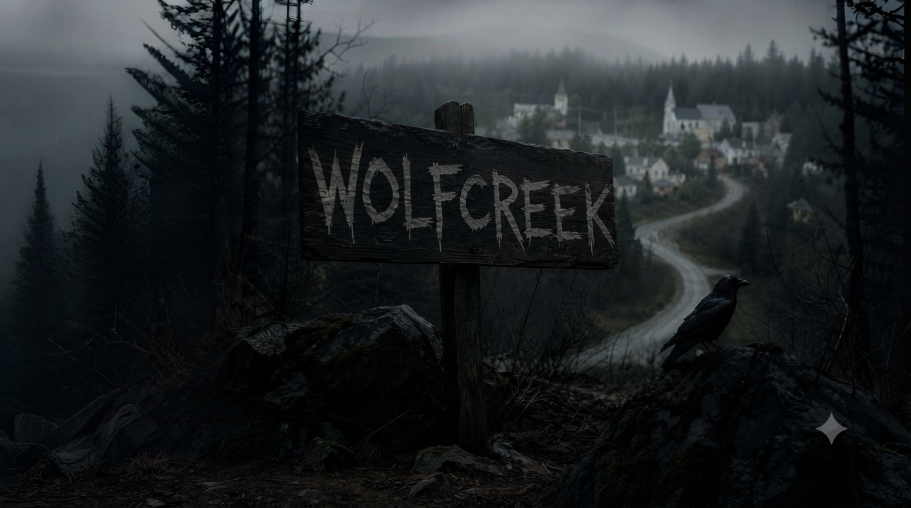

Маленьке містечко Вулфкрік, загублене серед густих лісів штату Мен, завжди було тихим і спокійним — до 15 жовтня 1985 року...


Маленьке містечко Вулфкрік, загублене серед густих лісів штату Мен, завжди було тихим і спокійним — до 15 жовтня 1985 року...

У ту ніч місцевий історик Едвард Кроу, відомий своєю одержимістю стародавніми легендами, зник безвісти.
_20260903_191218_0000.png)
Його будинок знайшли порожнім, але з явними слідами боротьби: розбиті меблі, кров на підлозі

Через тиждень у лісі неподалік виявили тіло Едварда, але причина смерті залишилася загадкою. Експертиза показала, що його серце зупинилося без видимих причин
_20260903_191248_0000.png)
Місцеві шепталися про стару легенду: про "Тінь Вулфкріка" — древню сутність, яка, за переказами, прокидається кожні 50 років, щоб забрати нову жертву.
Ви є команда детективів із Бюро спеціальних розслідувань, яких викликали до Вулфкріка, щоб розкрити справу. Але час сплива: з моменту смерті Едварда минуло 6 днів...